Email marketing¶
Emails are an effective, fully-customizable form of communication that are able to reach any target audience - large or small. The success of an email is easily measurable, especially when a creative call-to-action is involved.
Odoo Email Marketing provides professional-grade email design tools, templates, and features, designed to simplify the otherwise complex process required to create engaging emails, build successful campaigns, and track their overall effectiveness in a single application.
Email marketing dashboard¶
To get started, click on the app icon, located on the main Odoo dashboard, which leads to the main Email Marketing dashboard (in the default kanban view).
To see all the mailings in the database, remove the default My Mailings filter from the search bar.
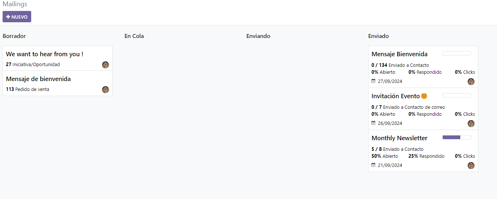Note
In the search bar, by default, the filter: My Mailings is present. That means the only information being seen (at that time) on the Email Marketing dashboard are emails that the current user has created, sent, or is responsible for.
This filter can be removed by clicking the X next to My Mailings in the search bar. Doing so, reveals all the information for every email in the database.
Default kanban view and stages¶
The four kanban columns each represent the various stages of emails that have been built or sent within the Email Marketing application.
The stages are: Draft, In Queue, Sending, Sent.
Draft: means the email is still being written/created.
In Queue: means the email is scheduled, and sent at a later date.
Sending: means the email is currently being sent to its recipients.
Sent: means the email has already been sent to its recipients.
In each stage, there are drag-and-drop cards representing the email campaigns that have been created, and the stage they are in represents the current status of that mailing.
Each mailing block on the Email Marketing dashboard provides key information related to that specific email.
When the cursor hovers over the upper-right corner of an email campaign card, three vertical dots (⋮) appear. When clicked, a mini drop-down menu reveals the option to color-code the email Delete the email altogether, or Archive the message for potential future use.
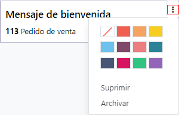In the upper-right corner of the main Email Marketing dashboard, there are other view options to choose from: List and Graph.
List view¶
The List view (represented by the ☰ (three vertical lines) icon) provides the same key information, but in a classic list format.
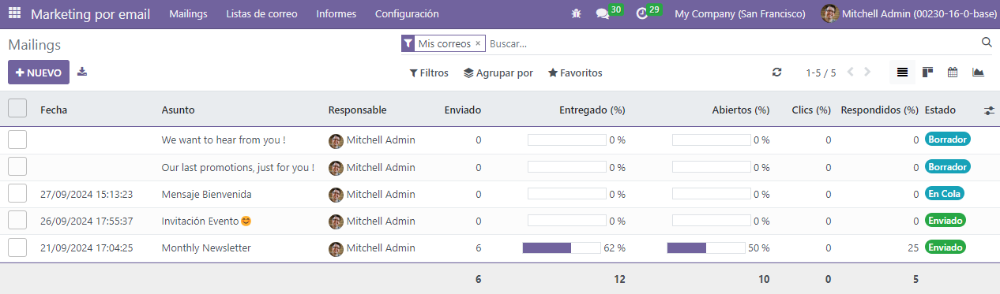Graph view¶
The Graph view (represented by the 📊 (bar graph) icon) provides the same key information, but in a variety of customizable graph (and chart) layouts.
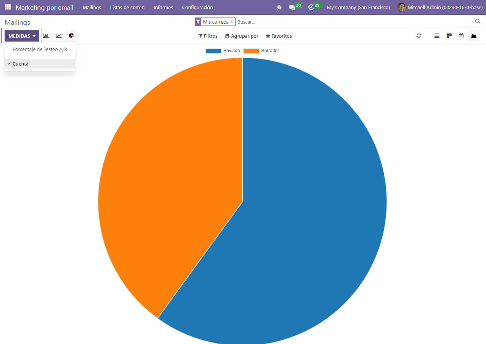In the upper-left corner, there is a Measures menu, providing even more filter options to further customize the graph views.
Those Measures options are: A/B Testing percentage, Color Index, and Count (which is selected, by default).
Filters, Group By, and Favorites search options¶
Regardless of the view chosen for the Email Marketing dashboard, the Filters, Group by, and Favorites options are always available.
These options provide various ways to specify and organize the information seen on the Email Marketing dashboard.
This drop-down menu provides different ways to filter email campaigns on the dashboard. The options are: My Mailings, Sent Date, Archived, and Add Custom Filter. If Add Custom Filter is selected, Odoo reveals an additional drop-down menu, with three customizable fields to fill in, in order to retrieve results that fit more specific criteria.
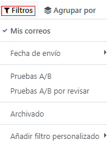This drop-down menu provides additional ways to organize the data on the dashboard by grouping them in specific ways. Using this drop-down menu, the data can be grouped by the messages’ Status, or who it was Sent By.
There is also the option to group the data by Sent Period, which has its own sub-menu of options to choose from. The Sent Period options are Year, Quarter, Month, Week, and Day.
If none of the above Group By options deliver the desired results, click Add Custom Group at the bottom of the drop-down menu. Doing so reveals a new field, wherein custom criteria can be selected and applied, thus delivering any grouping of data that may be desired.
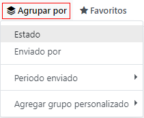This drop-down menu provides different ways to incorporate past search filters and other record-related options to customize the dashboard. The options are: Save current search, Import records, Add to my dashboard, and Add to Google Spreadsheet.
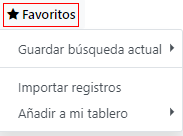Settings¶
To view (and modify) the Email Marketing settings, navigate to .
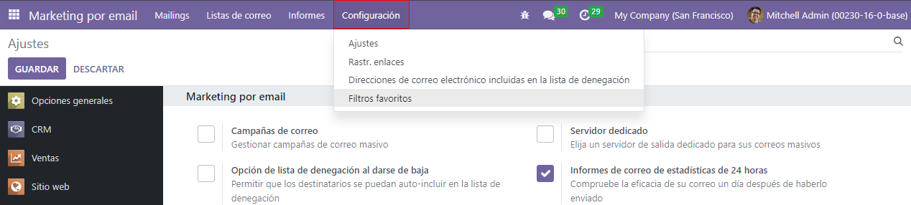On this Settings page, there are three features available. The features are: Mailing Campaigns, Blacklist Option when Unsubscribing, and Dedicated Server.
Mailing Campaigns: enables the option to manage mass mailing campaigns.
Blacklist Option when Unsubscribing: allows recipients to blacklist themselves from future mailings during the unsubscribing process.
Dedicated Server: provides the option to utilize a separate, dedicated server for mailings. When enabled, Odoo reveals a new field (and link), in which the specific server configurations must be entered, in order for it to connect properly to Odoo.
Create an email¶
To create an email, open the application, and click the Create button in the upper-left corner.
Clicking Create reveals a blank email detail form.

First, enter a Subject to the email. The Subject is visible in the recipients’ inbox, allowing them to get quickly see what the message is about.
Note
The Subject field is mandatory. An email can not be sent without a Subject.
Tip
The ☺ (smiley face) icon at the end of the Subject field (and Preview Text field) represents emojis. Click that ☺ (smiley face) icon to reveal a menu of emojis that can be used in either field.
Next, there is the option to enter some Preview Text. This text is a catchy preview sentence that encourages recipients to open the message. In most inboxes, this is displayed next to the subject.
Tip
Keep the Preview Text empty to show the first characters of the email content, instead.
Recipients¶
After that, it’s time to choose the recipients of this email, which can be completed in the Recipients field.
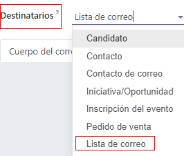The default option is Mailing List. If Mailing List option is selected, a specific Mailing List needs to be chosen from the adjacent Select mailing lists field drop-down menu.
Then, Odoo will only send this email to contacts on that specific mailing list.
See also
When the Recipients field is clicked, a drop-down menu of other options is revealed. Each option provides different ways Odoo can create a target audience for the email.
Those options (excluding the default Mailing List) provide the option to create a more specified recipient filter, in an equation-like format.
The Recipients field options are as follows:
Applicant: filter focuses on specific job applicants in the database.
Contact: filter focuses on specific contacts in the database.
Event Registration: filter focuses on people in the database who purchased event registrations.
Event Track: filter focuses on people in the database who hosted a specific talk (track) at an event.
Lead/Opportunity: filter focuses on leads or opportunities in the database.
Mailing Contact: filter focuses on specific mailing contacts in the database.
Sales Order: filter focuses on a specific sales orders in the database.
If the specified recipient fields don’t automatically reveal themselves, simply click the Add Filter button beneath the Recipients field, and Odoo reveals the necessary equation fields to further drill down the target recipients for this mailing.
Add a recipient filter¶
To add a more specified recipient filter, select any recipient option (other than Mailing List), and clicking Add Filter, if needed, to reveal three fields, formatted like an equation.
To reveal the sub-menu options, click each field, and make the desired selections, until the preferred configuration has been achieved. The number of Records that match the rule(s) are indicated to the right of the Recipients field, in green.
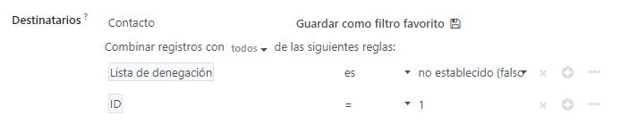Note
Some sub-menu options in the first rule field allow for a second choice to provide even more specificity.
To the right of each rule, are × (Delete node), ＋ (Add node), and ⋯ (Add branch) icons.
The × (Delete node) icon deletes a specific node (line) of the rule. The ＋ (Add node) icon adds a node (line) to the rule. And, the ⋯ (Add branch) icon adds a branch to the node. A branch means two additional, indented sub-nodes are added to the rule, providing even more specificity to the line above it.
Mail body tab¶
At the bottom of the email form are two tabs: Mail Body and Settings. Let’s focus on Mail Body tab first.
In the Mail Body tab, there are a number of pre-configured message templates to choose from. Select the desired template, and modify every element of its design details with Odoo’s drag-and-drop building blocks, located on the right sidebar. Each building block provides unique features and professional design elements.

Tip
To build an email from scratch, select the Plain Text template, and Odoo provides a blank email canvas, which can be customized in a number of ways - either by using the front-end rich text editor that accepts slash (/) commands, or with the XML code editor when Developer Mode (debug mode) is engaged, and the </> icon is clicked.
Settings tab¶
To the right of the Mail Body tab is the Settings tab.
Note
The options available in the Settings tab will be different, depending on if the Mailing Campaigns feature is activated in the Settings page of the application ().
Without the Mailing Campaigns feature activated, the Settings tab on the email detail form looks like this:
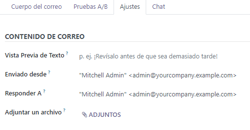Responsible: choose an employee (in the database) to be responsible for this particular email.
Send From: designate an email alias that’ll display as the sender of this particular email.
Reply To: designate an email alias to whom all the replies to this particular email will be sent.
Attachments: if any specific documents are required (or helpful) for this event invite, they can be sent along with this email, by clicking ATTACH A FILE, and adding the appropriate document(s).
When the Mailing Campaigns feature is activated, additional Marketing options appear in the Settings tab, which look like this:
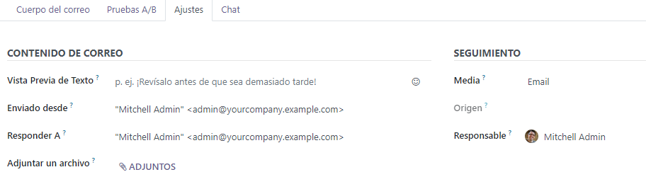The additional features are: Mailing Campaign, Allow A/B Testing, and A/B Testing percentage.
Mailing campaigns¶
The Mailing Campaign field provides the option to add this particular email to a previously-made email campaign in the database. Click the empty field to reveal a drop-down menu containing all previously-made mailing campaigns in the database.

If the desired campaign isn’t available in the initial drop-down menu, select Search More to reveal a complete list of all mailing campaigns in the database. Or, type the name of the desired mailing campaign in the Mailing Campaign field, until Odoo reveals the desired campaign in the drop-down menu. Then, select the desired campaign.
Create new mailing campaign (from Settings tab)¶
To create a new campaign from this Mailing Campaign field, start typing the name of this new campaign, and select Create [Campaign Name] or Create and Edit….
Click Create to add this new mailing campaign to the database, and modify its settings in the future. And click Create and Edit… to add this new mailing campaign to the database, and Odoo reveals a pop-up window.
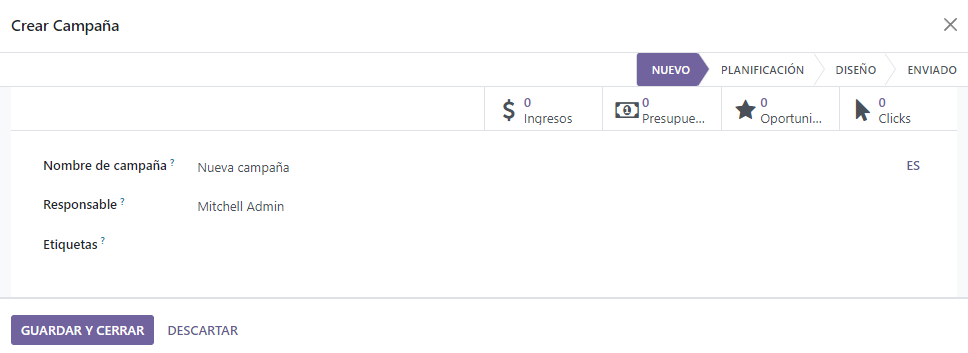Here, the new mailing campaign can be further customized. Adjust the Campaign Name, assign a Responsible, and add Tags.
The top row of the Create: Mailing Campaign pop-up window is filled with analytical smart buttons. Each of which displays various metrics related to the campaign. When clicked, Odoo reveals a separate, more detailed page with even more in-depth statistics.
The option to instantly a new communication from this pop-up window is available in the upper-left corner. The adjustable status bar is located in the upper-right.
When all modifications are ready to be finalized, click Save. To delete the entire campaign, click Discard.
Create new mailing campaign (from Campaigns page)¶
When the Mailing Campaigns feature is activated, a new Campaigns option appears in the header of the Email Marketing application. Campaigns can also be created on this Campaigns page in the Email Marketing app.
To do that, navigate to . When that’s clicked, a pop-up window appears, in which the Campaign Name, Responsible, and Tags can be added directly on the Campaigns dashboard.

Click Add to add the campaign to the database, and freely edit it later on. Or, click Edit and Odoo reveals the campaign template form on a separate page, providing the opportunity to further edit the campaign, send communications related to the campaign, and analyze various metrics related to the campaign, via the smart buttons at the top of the form.
A/B testing¶
Back in the Settings tab of the mailing, if the Allow A/B Testing box is checked, recipients are only be mailed to once. This allows different mailings to be sent to randomly selected recipients. This tests the overall effectiveness of the mailing, and eliminates the need for duplicate messages.
The A/B Testing percentage field represents the percentage of contacts in the database
that this message will be mailed to, as a part of the A/B Testing. Enter a number
between 1-100. The recipients are randomly chosen.
Send, schedule, or test¶
After finalizing the mailing, Odoo provides the following options in the upper-left corner of the email template page. Those options are: Send, Schedule, and Test.
While in Edit mode, there are also buttons to Save or Discard the mailing, as well.
Send - Click to have Odoo send the email to the desired recipients. When Odoo has sent the mailing, the status changes to Sent.
Schedule - Click to reveal a pop-up window, in which a future date-time is chosen. Odoo sends the mailing to the desired recipients at that specified date-time. When a date-time is chosen, the status of the mailing changes to In Queue.
Test - Click to reveal a pop-up window, in which Odoo allows a sample email to be sent for testing purposes. Enter the desired recipient’s email address in the Recipients field, and click Send Sample Mail.
Save - Click to save the mailing as a draft, which can be edited (and sent) at a later date. When clicked, the status of the mailing stays as Draft.
Discard - Click to discard any changes that have been made since the last save.
Tip
When Save or Discard is selected (while in Edit mode), those options are replaced with an Edit button and a Create button. Click Edit to re-enter Edit mode. Click Create to start creating a new mailing.
Note
By default, there’s a daily limit applied for all emails sent throughout all applications. So, if there are remaining emails to be sent after a limit has been reached, those mailings will not be sent automatically the next day. The sending needs to be forced, by opening the email and clicking Retry.